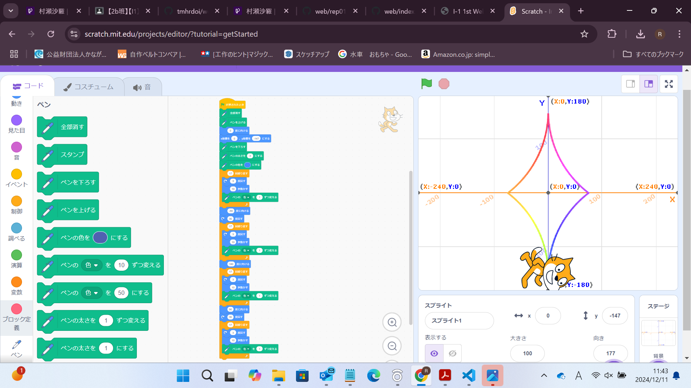
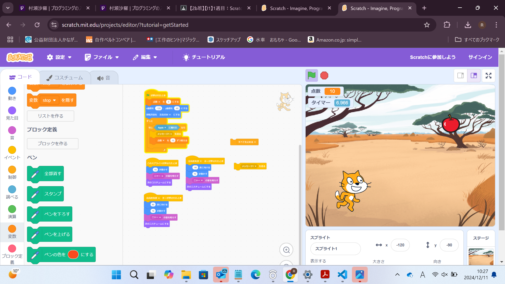

1週目のレポート ： 公大高専１年実習I-1
2b班33番 村瀬
第1週目
1-1 サイエンスアート

1.内容
Scratchを使ってラインアートを製作した。
はじめは資料に沿っていくつかラインや円などを描き、その後オリジナルのラインアートを製作した。
2.感想
書きたい線はあるのだが、それを実現するために何度回転して、何歩進めばよいかが分からなくて、想像していたよりも難しかった。
しかし、値を少しずつ変えていくことで、最終的に理想の図形を描くことができた。
その少しずつ値を変え、理想の図形に近づいていく様子がおもしろかった。
1-2 ゲーム

1.内容
Scratchを使ってゲームを製作した。
ラインアートと同様にはじめは資料に沿ってゲームを作成していき、その後作成したゲームに新しい要素などを付け加え、
オリジナルのゲームを製作した。
2.感想
Scratchはブロックを組み合わせてプログラムをするため、比較的簡単だと思っていたが、
意外と難しいと感じた。なぜなら、作りたいプログラムは頭の中でできているのに、
どうすればそれを実現できるかなかなか思いつかなかったからだ。
プログラミングの脳を鍛えるのによいと思った。これから、Scratchにも挑戦してみたいと思う。
1-3 ホームページ作成
私のホームページ
1.内容
HTMLとCSSを使用して、自己紹介のホームページを作成する。
githubを利用し、コードを書いた。
2.感想
情報の授業でプログラミングを勉強した時に、HTMLとCSSでホームページを作成したいと思っていたため、
今回挑戦できてありがたかった。色々調べてみると、文字の大きさや色を変更したりできたので、興味深かった。
このほかにも様々な変更するコードがあると思うので、調べてみたいと思う。
各ページへのリンク
1週目のレポート
2週目のレポート
3週目のレポート
私のホームページ